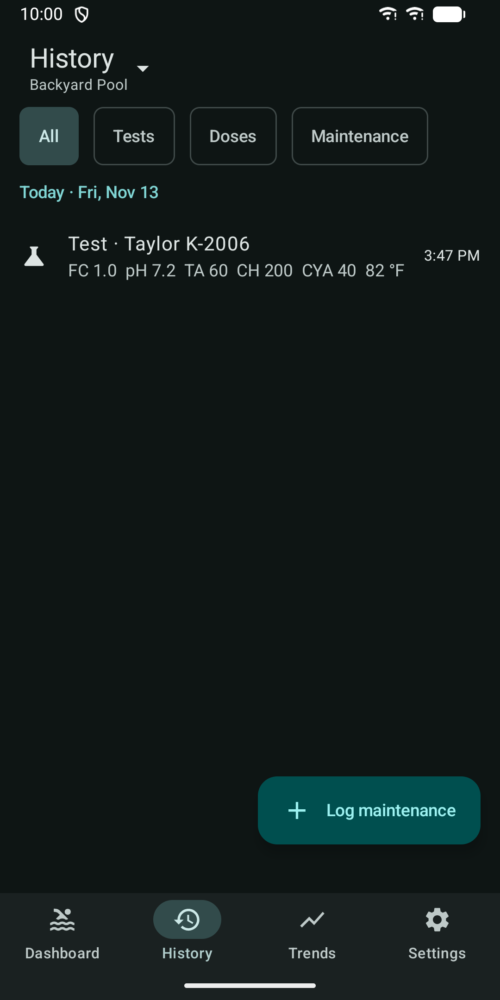

Pool Chem Log: Wassertests
Pool- und Spa-Wassertests protokollieren und FC/CYA-Dosierungen berechnen.




Über die App
Pool Chem Log ist ein Wassertest-Protokoll und Dosierrechner für Pools und Spas. Du trägst deine Messwerte ein, siehst, was außerhalb des Zielbereichs liegt, und bekommst Dosierungen für die Produkte, die du wirklich benutzt. Die Zielwerte folgen der FC/CYA-Methode: Das Ziel für freies Chlor richtet sich nach deinem Stabilisator-Wert (CYA). Die App funktioniert ohne Internetverbindung. Ein Konto ist nicht nötig. Die App hat keine Internetberechtigung, deine Daten bleiben auf deinem Handy. WASSERBECKEN Lege einen Chlor-Pool, einen Salzwasser-Pool (SWG) oder einen Spa mit Chlor oder Brom an. Gib das Volumen direkt ein oder nutze den Volumenrechner für Rechteck, rund, oval, nierenförmig und freie Form. Die Oberfläche (Putz, Kiesel, Folie, GFK, Acryl) bestimmt die Ziele für Calcium und Sättigung. Standard sind US-Einheiten, metrisch ist wählbar. TESTEINGABE NACH DEINEM TESTSET Wähle Taylor K-2006, TF-100 oder Teststreifen. Das Testset legt Schritte, Reihenfolge und Genauigkeit fest. Zähle Tropfen für FC, CC, TA, CH und Salz und wähle pH, CYA und Streifenfarben aus den Werten des Sets. Ein Teiltest ist in Ordnung. Die Wassertemperatur wird vom letzten Test übernommen. DOSIERUNG Die App berechnet Dosierungen für freies Chlor, pH, Gesamtalkalinität, Calciumhärte, Stabilisator, Salz und Borate. Sie enthält eingebaute Produkte, und du kannst eigene Produkte mit beliebiger Stärke anlegen. Große Änderungen werden auf mehrere Zugaben mit Wartezeit dazwischen verteilt. Nebenwirkungen werden angezeigt, zum Beispiel dass Dichlor und Trichlor CYA erhöhen, Cal-Hypo Calcium erhöht und Säure die Alkalinität senkt. Salzwasser-Pools erhalten außerdem einen Vorschlag zur Zellenleistung. Ein Tipp auf Mark added speichert die Zugabe, und die Vorschläge werden aktualisiert. WASSERGLEICHGEWICHT UND SLAM Der Calcit-Sättigungsindex (CSI) berücksichtigt Borate und Salz. Ein geführter SLAM (Shock Level And Maintain) begleitet den nächtlichen Chlorverlusttest und zeigt die Abschlusskriterien. VERLAUF, TRENDS UND ERINNERUNGEN Ein gemeinsamer Verlauf listet Tests, Zugaben und Wartung wie Filterreinigung, Salzzellenreinigung, Wasser nachgefüllt und Wasser abgelassen. Die Trends zeigen freies Chlor und pH der letzten 30 Tage. Erinnerungen für Tests und Wartung werden auf deinem Gerät geplant. Ein Startbildschirm-Widget zeigt deine letzten Werte und die nächste Dosierung. DEINE DATEN Alles wird auf deinem Handy gespeichert. Die App hat keine Werbung, keine Analyse und keine Absturzberichte. Android-Backup wird unterstützt. Außerdem kannst du eine JSON-Sicherung exportieren und importieren. Die Datei ist Klartext und nicht verschlüsselt, und die App warnt dich vor dem Export. WAS KOSTENLOS IST UND WAS PRO BRAUCHT Kostenlos: ein Pool oder Spa, volles Protokoll, Dosierung, CSI, SLAM, Erinnerungen, Widget, JSON-Sicherung und Import sowie die 30-Tage-Trends für freies Chlor und pH. Pro ist ein einmaliger Kauf in der App, kein Abo. Es bietet mehr als einen Pool oder Spa, CSV-Export von Tests, Zugaben und Wartung sowie alle Diagramme mit beliebigem Zeitraum. Beim Wiederherstellen eines Kaufs auf einem neuen Handy verwende dasselbe Google-Konto. SICHERHEIT Dosierungen sind Schätzwerte. Teste erneut, bevor du mehr zugibst, mische niemals Chemikalien, trage Schutzausrüstung und folge dem Etikett des Produkts. Wenn Etikett und App sich widersprechen, gilt das Etikett. Die Zielwerte beruhen auf Hinweisen von Trouble Free Pool. Pool Chem Log steht in keiner Verbindung zu Trouble Free Pool und wird nicht von dort empfohlen.